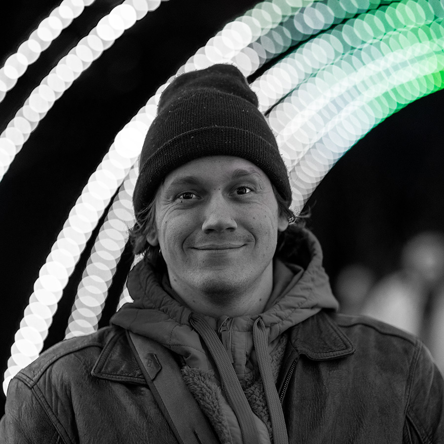

James — Our Awakening World
I am not an I.
After two decades of study, practice, observation, and introspection I've concluded that my individual self does not exist. In other words my sense-of-self is an illusion.
I surely seem to exist. That is my experience. But it is merely an experience. This desk, this computer, this coffee mug; they exist in some real and true way, but if we go to measure matter, to prove its existence, we fail again and again. We can only know for certain that they exist in our experience.
It's persistent. And it's beautiful.
Our isolated individual experiences are illusory as well. When we examine any part of them carefully enough, through meditation or introspection, we find nothing solid. In myself I find that most of what I experience myself to be are facets of our collective. Patterns inherited from my parents and ancestors. Programs discovered and installed over a lifetime. Ideas subscribed to. Capacities shaped by the people, places, and events that have moved through me.
I'm a rock tumbled in a stream.
Love, loss, grief, joy, rebellion, communion, addiction, liberation, death, renewal. We are all tumbled in the same waters. We are all the water. Forming a temporary whirlpool. A vortex of borrowed energies and patterns. I have my own path to follow, my own role to play, my own purpose to discover. But these pieces are parts of a greater whole.
We are Remembering.
We are remembering who we are, that we are. We are awakening not only to the eternal, groundless ground of all Being, but also to the beautiful meta-narrative of our shared humanity. What's most real isn't found in individual experience or objective measurement alone, but in what lives between us: the shared space where we create, where we become, where we discover what none of us could find on our own.
Humanity is not a concept to point to or rediscover. It is us and who we've been all along. It is an ever-evolving entity. Not the same today as it was yesterday. Not a collection of individuals. Not our physical bodies. It is everything. It's what we create, how we create, how we communicate about what and how we create. Not separate from nature. Not separate from machines. It is intelligent. It is emotional. It is intuitive.
Every medium we create is an extension of ourselves, as Marshall McLuhan would point out. The wheel extends the foot, the book extends the eye, the telephone extends the ear. Each new medium reshapes us as much as we shape it. We become what we behold. We shape our tools and then our tools shape us. We've built this playground that has made us what we are. But we've forgotten how to play. And we're just learning how to build.
Now with AI we've created something that extends our intelligence in unprecedented ways. And now we face a reckoning: if machines can reason, calculate, compose, and create — then what is human intelligence? I think we will discover that intelligence was never really "ours" in the first place.
Artificial intelligence is integral to our collective awakening. It is a mirror the size of the species. And art is a mirror too — just as essential, just as urgent. Art can be simple or complex. Singular or plural. Static or systemic. Art can be one-dimensional, two, three, four, five. Good art is not made by the artist. The artist is a mirror, a portal, a peephole.
I try to make myself available to the largest ideas, inspirations, and visions I can. They don't belong to me. They're not translatable. Our capacity to see is not what is seen. Our ability to communicate is not the message. The work of the artist is getting out of the way. The artist is a technician. The artist is the cable guy. The best we can do is akin to arranging fiber-optic wires, connecting the unseen to the visible world.
There are so many visions out there that are so much greater than I'll ever be able to hold. There is much that is waiting and willing to land here on Earth. Together we can hold more than we could alone. We are just beginning to learn how to truly create together.